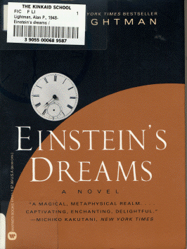

Einstein's Dreamsby Alan Lightmanpublisher: Pantheon Books Fiction, 179 pages |  (book cover art, Copyright ©1993 Fern Cutler) |
A series of short dreams about the nature of time and space, each of which illustrates an idea touched upon by Einstein's theories of relativity. Presumably, these dreams are what inspired Einstein to formulate his new theories.Recommended for: "Ideas" people, dreamers, imaginative types, people who ask "what if...?"/blockquote>Did-you-read questions:
Deadline: February 1, 2005.
These should be easy questions, but you should have the questions ready and keep an eye out during your reading. Each question should be answered with 1-2 sentences.
Note: these questions are not probably not the most important part of the book! Your essay will not have to cover these questions!
Report Questions:
- In the world with stilt houses, why do people live in high places?
- What will happen on September 26, 1907?
- Who are the three types of people who live in the "world of fitful time?"
- What does the young man decide in the world of discontinuous time?
- Why does "each man and woman desire a bird"?
Deadline: Peer Review Session on February 8, 2005; paper due February 10, 2005.
You should write a 3 - 4 page essay on one of the following questions. Your essay should include examples and references to the book, unless otherwise specified. Page number references are sufficient for citing material from the primary book. If you use outside materials, cite your sources in full. If you would rather write on a different topic, you may, but clear it with Mr. Howe or Ms. Sullivan first.
- Were these short dreams effective in making you think differently about time and space? Pick one or two examples and discuss how they changed your perspective. (Be sure to use examples from the book.)
- Pick a story from the book and extend it further; or make up a new world, change one thing about time, and write a story about it that would fit in this book.
- Periodically, throughout the book, there are short pieces about Einstein himself, outside of the dreams. Do you think these fit in well with the rest of the book? Be specific, and cite examples to make your case, pro or con.
- At its heart, what is this book really about? Physics? People? Dreams? The creative process? Justify your conclusions.
Graphic and Presentation:
Deadline: February 21 - March 3, 2005.You will give a 10 minute presentation on both of the following:
- Convince your peers that they should (or should not) read this book. (This may include a brief summary of the book.) Give examples of what was cool or worthwhile in the book, and what you got out of it (or didn't).
- Describe a (realistic) science idea that you learned about in this book, citing information from at least 2 external sources (other than the dictionary). If you would like help choosing or understanding an idea from your book, you are invited to come talk to Mr. Howe or Ms. Sullivan.
Note: This presentation should not be just a reading of your paper!Along with this presentation, you should have a graphic that will go with it. A Power Point presentation is recommended, but if you have a special idea for a something else, such as a model, an original video presentation, or a well done drawing/ painting/ sculpture/ etc., you may do so, provided it involves a similar level of effort and polish. Speak to Mr. Howe or Ms. Sullivan first if you are considering an alternate graphic format to the Power Point.
Return to the Book Menu Previous|Next